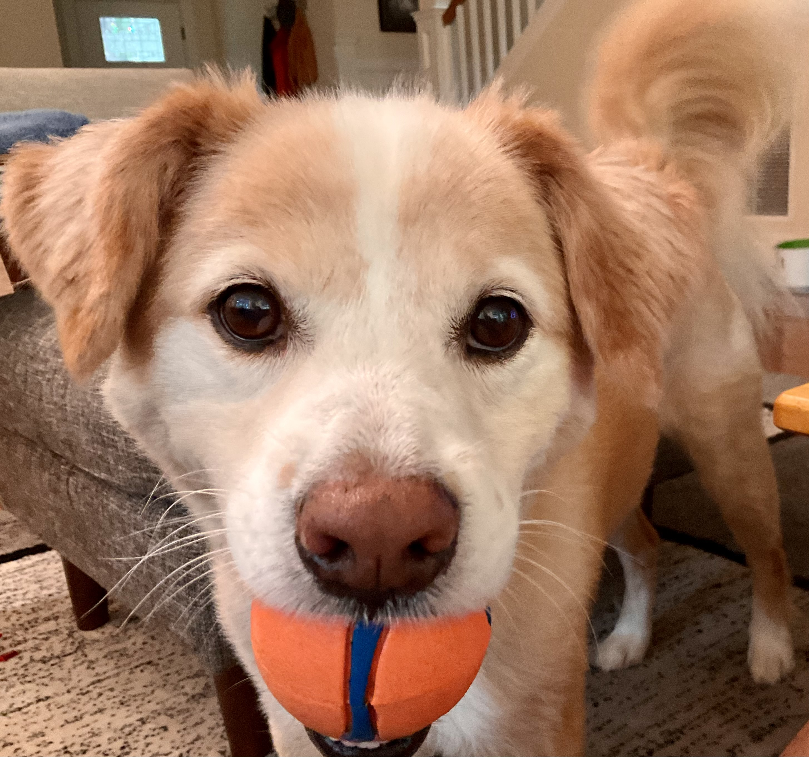

About Hao Ye
I am motivated to use my expertise to solve interesting and impactful problems. Lately, that has been through teaching and developing training materials, and collaborating to achieve systemic change in research practices.
My academic background has spanned several different fields, including computer science, psychology, oceanography, and ecology. Currently, I focus on open research / open science and reproducibility practices.
More broadly, I am interested in making academia and society more inclusive and open, to improve accessibility to knowledge. After many years spent working on data and software, I have become more intentionally collaborative to tackle these larger scale problems. I enjoy working with other people on initiatives, so get in touch if you want to chat!
Education
Ph.D. in Oceanography ∙ University of California San Diego / Scripps Institution of Oceanography ∙ 2015
M.S. in Oceanography ∙ University of California San Diego / Scripps Institution of Oceanography ∙ 2011
M.A. in Psychology ∙ University of California San Diego ∙ 2007
B.S. in Computer Science ∙ California Institute of Technology ∙ 2006
Affiliations
Governance Committee ∙ OLS
Data Paper Editor ∙ Ecology
Code of Conduct committee ∙ Reproducibility 4 Everyone
Instructor, Instructor Trainer ∙ The Carpentries
Past Affiliations
Associate Editor ∙ Methods in Ecology & Evolution
Selection Committee ∙ Code for Science & Society, Event Fund
Falafel

Old Website
Looking for the previous version of my website? It can be found at https://github.com/ha0ye/personal-website